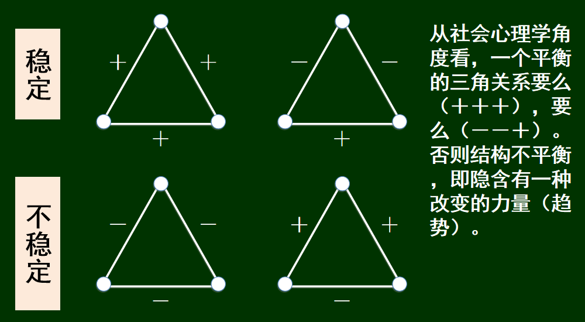

众智科学与网络化产业
写在前面
我这一年的考试题目：
山东大学软件学院众智科学2025年期末考试试卷-CSDN博客
众智这门课要速通还是很快的，当然深挖也是挺有意思的X)
第一章 图论基础
一些概念
图 = 事物（节点） + 联系（边）
同构
邻接矩阵
关联矩阵：m*n的矩阵，横坐标是边集\(v_1到v_n\)，纵坐标是点集\(e_1到e_m\)，每列上都有两个\(1\) ,\(A_{i,j_1}=A_{i,j_2}=1\)表示\(e_i\)连接了\(v_{j_1},v_{j_2}\)
图的直径：任意两个节点之间的最大距离
连通、连通分量
割点、割边（桥）
捷径：AB相连且AB没有共同的相邻节点，则边AB为捷径（删除捷径会将AB间的距离增加2以上）
欧拉路，欧拉回路
二部图（二分图）：
- 二分图判断：染色法
- 二分图最大匹配问题：
- 用最大流求解二分图匹配
- 匈牙利算法：跟最大流一样，只是不用补s和t，直接从每个点开始增广
现实中若干典型网络：
- 合作图
- 例如，一群学者之间合著关系（co-authorship）
- 节点：人；边：当且仅当两个人有合著的文章
- 交流网
- 例如，一所大学师生之间的电子邮件关系网
- 节点：人；边：两人之间发过一定量的往返邮件
- 信息链接网（有向）
- 万维网上的网页之间的链接关系
- 论文之间的引用关系
- 合作图
最短路算法
- BFS
- A*：用优先队列替换BFS的队列，每次拓展离终点曼哈顿距离最小的点
- DFS
- Floyd-Warshall
- Bellman-Ford
- SPFA：Bellman-Ford的优化，只有上一次被松弛的结点所连接的边，才有可能引起下一次的松弛操作。用队列来维护「哪些结点可能会引起松弛操作」，每次用他的邻边去尝试松弛，并把成功松弛的点入队。
- Dijkstra
第二章 强联系和弱联系
三元闭包
在一个社交圈内，若两个人有一个共同的朋友，则这两人在未来成为朋友的可能性就会提高
聚集系数 ： A的任意两个朋友之间也是朋友的概率（即邻居间朋友对的个数除以总对数）
社会网络结构的统计特征
度分布
(1）度分布函数。\(P(k)\)表示网络中度为\(k\)的节点在整个网络中所占的比例。
(2）累积度分布函数（Cumulative Degree Distribution Function）。\(P(k)\)表示度不小于\(k\)的节点的概率分布（对前面的求和）。
度分布可区分不同类型的网络。
平均路径长度
任意两个节点间最短路径的平均长度，也叫做网络的平均距离或网络的特征路径长度。
刻画了网络节点之间进行信息传递的代价大小， 在线社交网络中常用其衡量用户之间关系的紧密程度。
网络直径
有效直径
至少90%的互连节点对之间的距离均不超过的最小值
网络密度
\[ d(G) = \frac{2L}{N(N - 1)} \]
网络中实际存在边数与可容纳的边数上限的比值
可用于刻画网络中节点间相互连边的密集程度
在线社交网络中常用来测量社交关系的密集程度以及演化趋势
绝对密度公式
【没看懂】
\[ \quad d(G) = \frac{M}{\left[ \frac{4SR^3}{3D} \right]} \]
来比较不同规模网络的密度有效直径
D表示网络直径，R表示半径，S表示根据直径算出的圆周长
介数
\[ C_{\mathrm{B}}(k) = \sum_{i \in V} \sum_{\substack{j \neq i \in V}} \frac{\delta_{ij}(k)}{\delta_{ij}} \]
用来描述网络中节点承载最短路径数的能力
节点（或边）的介数等于网络中所有最短路径中经过该节点（或边）的概率之和
描述了节点在网络中的影响力与中心性程度
介数计算的一种算法：
从一个节点（A）开始，做广度优先搜索，将节点分层（以便于下面的步骤）
确定从A到其他每个节点的最短路径的条数
确定当从节点A沿最短路径向其他所有节点发送1个单位流量时，经过每条边的流量
对每一个节点，重复上述过程，累计，除以2，即得每条边的介数。
计算方法：
①DFS分层并求出A到每个点的最短路数量（每个节点旁边标的数）
②从最底层往回推流量，每经过一个点总流量+1，然后根据父节点的路径数平分
强三元闭包
强三元闭包原理（假设）
如果A-B和A-C之间的关系为强关系，则B-C 之间形成边的可能性应该很高；
若A有两个强关系邻居B和C，但B-C之间没有任何关系（s或w），则称节点A违背了强三元闭包原理；
如果节点A没有违背强三元闭包原理，则称节点A符合强三元闭包原理。
捷径 = 弱关系
断言（肉眼可证）：若节点A符合强三元闭包，且至少有两个强关系邻居，则与A相连的任何捷径必定意味着是弱关系。
嵌入性
一条边的嵌入性指两个端点共同邻居的数量
嵌入性高的两个人比较相互信任
结构洞
存在于网络节点集合之间的“空地”
当一个人用与他相关的多条捷径跨越了结构洞的优势：
①可以更早获得来自网络中多个互不交叉部分的信息
②处在捷径的一端对其创造性有放大功能
③有某种社交“把关”的机会，能够控制相邻节点访问其他群体和获取信息。这个位置给予了这个人一种权利资源。
社会网络的划分
Girvan-Newman方法（一种分割法）
核心思想：不断删除高介数的边（承载大量信息流代表其位置在关系紧密群体的交界处）
①找出一条或多条介数最高的边并移除它，得到图划分的第一层区域
②重新计算所有的介数，再将高介数的边移除，得到嵌套在大区域里的小区域
③重复①、②
第三章 网络及其存在的环境
同质性（homophily）
同质性是社会网络结构形成的基本外部原因
社会网络中同质性的简单测度
基本思想：如果端点颜色相同的边较多，则同质性显现较强
给定一个二色图G，让\(p\)为一种颜色节点占比，\(q=1-p\)对应另一种颜色节点占比
考虑”假若按照该占比随机着色“，于是两端颜色不同的边出现的概率为\(2 \cdot p \cdot q\)
比较G中的情况：\(\frac{端点异色边数}{总边数}\)
若明显小于\(2 \cdot p \cdot q\)，则可认为同质性明显

同质性对社会网络演化的影响
- 选择性：人们倾向于和他们相似的人成为朋友 -> 社团闭包
从属网络
每个人和活动都是一个点，连线表示归属关系的二分图。也被翻译为归属网络
描述了人们相遇的机会
- 社会化：人们也会因为需要和朋友们保持一致而改变自己的行为 ->会员闭包
社会归属网
三元闭包、社团闭包、会员闭包可同时显现
根据闭包推算变化
假设
如果两个不相识的人有了3个或更多共同朋友，则他们下一时点前会成为朋友 如果某人有2个或更多朋友参加了某个俱乐部，则他在下一时点前参加该俱乐部 如果两个不相识的人参加了2个或更多相同的俱乐部，则他们在下一时点前会成为朋友
创建邻接矩阵A和归属矩阵B
隔离（segregation）
同质性影响与结果（固有特质相同->可变特质趋同）
谢林模型-+
第四章 正关系与负关系
平衡性
边的正负性 支持(+)与反对(-)；朋友(+)与敌人(-)
稳定性 
社会网络（图）的结构平衡 若图中所有三角关系都是平衡的即每个三角关系要么3＋，要么1＋和2－），则该完全图结构平衡。
平衡定理 如果一个标记（＋／－）的完全图是平衡的，则要么它的所有节点两两都是朋友，要么它的节点可以被分为两组，X和Y，其中X组内的节点两两都是‘＋’关系，Y组内的节点两两也都是‘＋’关系，而X组中的每个节点与Y组中每个节点之间都是‘－’关系。
弱平衡网络
只是不允许（＋＋－）的网络
弱平衡网络中的平衡定理 节点可分成若干组，组内均为朋友（＋），组间均为敌人（－）
非完全网络中的平衡 允许一些边的缺失，即考虑非完全图情形
近似平衡的网络
允许网络中有少量三角形不平衡（即可以出现少量“－－－”或“－＋＋”）
结论
若一个完全标注图中至少99.9%的三角形是平衡的（+++或--+），则
① 存在一个至少包含90%节点的子集，它们两两间至少有90%互为朋友（+）
② 可以将节点集划分为两个子集X和Y，满足：
- X中至少有90%的节点对都互为朋友（+）
- Y中至少有90%的节点对都互为朋友（+）
- X和Y之间的节点对中至少有90%的互为敌人（-）
非完全结构的平衡性
结构平衡的定义
①可以通过补充缺失的边（带符号），成一个平衡网络
②节点可以分成两组（组内边为＋，跨组为－）
判别
图是平衡的，当且仅当它不包含奇数个负关系的边的圈。
方法：对简约图（把全是正关系的一组看成一个整体）进行广度优先搜索
对如下nxm方格态，通过归纳法证明若每个小方格都是平衡的，整体一定平衡
第五章 小世界现象
六度分隔 人类社会网络中，任何两个人之间的最短路径长度都不超过6
短视搜索 一种有目标的、基于局部信息的网络搜索过程。 每个节点有一个特征（根据需求可有不同定义），任何两个节点之间的特征可以谈差别（特征距离，不同于网络距离） 每个节点仅知道自己和自己网络邻居节点的特征； 搜索过程可看成是信息传递的过程，节点将信息（目标节点的特征）传给离目标节点距离较近（差别较小）的网络邻居节点
形成社会网络的两种基本力量
同质性，弱关系
Watts-Strogatz模型
其中，r是同质连接的参数，表示某个节点到那些相距r网格步以内的节点的连接；k是弱关系连接的参数，表示对某个节点，在网络中随机均匀选择k个节点建立弱关系连接。
Watts-Strogatz-Kleinberg模型
在Watts-Strogatz模型基础上，让两个节点存在随机边（弱关系）的概率与距离的某个幂次（q）成反比。
在Watts-Strogatz模型基础上，让两个节点之间存在随机边的概率与距离的某个幂次（q）成反比 q：控制远程连接的概率随距离递减的强度（Watts-Strogatz模型对应于q=0）
理论结果：当q=2时，分散搜索达到最佳效果
第六章 搜索引擎
网页的中枢与权威性(一篇网页可以兼具两个性质) 权威性：被很多网页指向，权威值（auth） 中枢性：指向很多网页，中枢值（hub）
HITS算法
归一化与极限
在每一轮结束后做归一化：值／总和 归一化结果随迭代次数趋向于一个极限 相继两次迭代的值不变
PageRank
利用网页间的链接关系计算网页重要性
输入：一个有n个节点的网络（有向图），设所有节点的PageRank初始值为1/ n。 选择操作的步骤数k 对PageRank做k次更新操作，每次使用以下规则： 每个节点将自己当前的PageRank值通过出向链接均分传递给所指向的节点 若没有出向链接，则认为传递给自己（或者说保留） 每个节点以从入向链接获得的（包括可能自传的）所有值之和更新它的PageRank
对于前面的那个图（这个表格有问题，每个点的初值应该是1/4）：
可以通过数学方式得到：
同比缩减与统一补偿规则
防止PR值不恰当地集中到个别节点（共谋制造垃圾网页的情况）。
同比缩减：在每次运行基本PageRank更新规则后，将每一节点的PageRank值都乘以一个小于1的比例因子s，0<s<1，经验值在0.8-0.9之间。
统一补偿：在每一节点的PageRank值上统一加上(1-s)/n。
随机游走
PageRank的一种等价理解 问题：考虑一篇网页x，问经过k步随机游走到达x的概率是多少？ 证明：到达x的概率等于运行PageRank基本算法k步得到的值。
第七章 博弈论基础
严格占优
下图中，对参与人1来说，无论参与人2选 L 还是
R，U 的收益严格大于
D 的收益，因此 U
是严格占优策略。
对参与人2来说R 是占优策略（因为从不比
L
差，且有时更好），但不是严格占优（因为存在情况收益相等）。
L 是 U
的最佳应对，但不是严格的：当参与人1选 U 时，参与人2选
L 或 R 都得到
3，无严格优劣，因此 L
是非严格最佳应对。
R 是 D 的严格最佳应对：当参与人1选
D 时，参与人2选 R 得 4，选
L 得 0 → R
严格更优（4 > 0）。
纳什均衡
纳什均衡可以有多个，不能推断到底哪个均衡会出现 一般来说，纳什均衡概念能有助于缩小预测范围，但它并不一定能给出唯一的预测。
零和博弈
混合策略
混合策略均衡
让对手无法通过改变策略来占便宜，即让对手对你策略的选择无差异（即无论对手选什么策略，期望收益相同）。
以进攻方的最优混合策略举例，进攻方选择抛球概率\(p=\frac{1}{3}\)，使得防守方无论选防守抛球还是防守持球，期望收益相同：
纳什的奠基性贡献
证明了具有有限参与者和有限纯策略集的博弈一定存在纳什均衡（包括混合策略均衡）
社会最优
社会福利：某个策略组对应的各方回报的总和
纳什均衡和社会最优有可能一致，从社会应用的意义上讲，那是均衡和社会最优一致的系统是理想系统。
第八章 博弈论应用
布雷斯悖论
对于如下交通网，假设有4000辆车，如果同时走A-C或者D-B则所需时间为40+45=85分钟，如果一半司机走A-C-B，一半司机走A-D-B则时间为20+45=65，为纳什均衡
多修了一条路可能情况会更糟，在追求个人利益最大化动机的驱使下，解决社会问题不能仅靠增加资源，还要注意调整结构 均衡状态下，每个司机的纳什均衡策略都是A-C-D-B，40+40=80>65，增加了一条路情况反倒变得更糟
解决方案：
交融管制、收费
拍卖
（1）英式拍卖——增价拍卖
买方不断出价（提高售价），部分买方逐渐退出，直至剩下一个买方，以当前价格获得商品
（2）荷兰式拍卖——降价拍卖
卖方从最高价逐渐降价，直至有第一个买方接受当前价格，获得商品
（3）首价密封拍卖
买方同时向卖方提交密封报价，出价最高者以其出价获得商品
（4）次价密封拍卖
买方同时向卖方提交密封报价，出价最高者以次价获得商品
次价拍卖鼓励人们说真话，我出价的占优策略即是真实估价，如果我拿到购买权，我会以低于我出价的价格购买商品，赚；
如果我没拿到购买权，如果此时我想拿到购买权，需要出价比第一人高，这超乎我对商品的估价，收益为负。因此，出真实估价是占优策略
匹配问题
对任意一组价格pj，以最大差价（vij-pj）为指引做边，都定义了体现买方喜好的一种二部图，称为偏好卖家图。 如果偏好卖家图中存在完美匹配，则意味着出现了一个“合理分配”
第九章 广告
广告定价
互联网公司给出每个广告位的点击率，供广告主估计，\(\text{广告位价值}=\text{点击率}\times \text{单次点击估值}\)
特定完美匹配形式
有n个广告位（ai），n个广告主（xi），i=1,2,…,n
每个广告位有一个点击率，ri，i=1,2,…,n，假设 ri>rj，i<j
每个广告主有一个点击收入估值，pi，i=1,2,…,n，假设 pi>pj，i<j
形成一个对广告位的估值矩阵：V={vij}, i=1,…n, j=1,…n，其中，vij=pi*rj
断言，在如此估值矩阵下，对应匹配市场的社会最优配置方案一定是ai匹配给xi，i=1,2,…,n。
GSP
核心机制：出价最高的竞拍者获得价值最高的广告位，但只需支付次高出价（而非自己的报价）。
广告主的策略考量
- 估值（\(V_i\)) vs. 实际支付（\(P_i\)）:
- 广告主不仅关注广告位的价值（如点击率），还需计算净收益（\(V_i-P_i\)）。
- 例子中：
- 若x按估值报价7，获得广告位A：
- 支付 = 次高价6（来自y），净收益 = 7×10−6×10=10。
- 若x故意压低报价至5，获得广告位B：
- 支付 = 次高价1（来自z），净收益 = 7×4−1×4=24。
- 若x按估值报价7，获得广告位A：
- 结论：在GSP中，广告主可能策略性压低报价以追求更高净收益，而非单纯按估值出价。
VCG
让每个人支付的价格等于他的出现对其他人造成的价值损失总和。具体来说：
按照出价的高低，将广告位（按点击率递减顺序）分给广告主。
对于广告主 X ，他的支付价格如下确定
设，在该匹配中，其他人的出价总和为Σ1
从广告主集合中去掉 X，其他人按照出价形成新的最优匹配（对应一个新的出价总和Σ2）
Σ2−Σ1 就是 x要支付的价格（VCG价格）
第十章 权力
社会网络中的权力
一个点所以具有权力，是因为其他节点对其具有依附性，它具有
排他性——有能力排除其他店，
饱和性——心理学原则，当能比其他成员得到更多的利益，倾向于不满足从一个关系中得到均值份额，
中心性——处于结构洞位置上的节点
结果
给定一个图，”结果“是其中的一个匹配（一个点无冲突的边的子集）
稳定结果
稳定结果指谈判中双方达成的、无外部因素破坏的协议（如无人能通过单方面行动获得更高收益）。
不稳定：存在一条不在结果中的边，其两端的价值之和小于1
稳定：不存在不稳定的边
纳什协议解
- 场景：两个个体（A和B）需要通过谈判分配1美元的总收益。
- 核心思想：引入外部选项（威胁点）作为谈判底线，体现结构性权力
- 外部选项：如果谈判破裂，A和B的备选收益分别为 x 和 y（即“谈崩”时的保底收益）。
- 约束条件：
- \(0≤x<1, 0≤y<1\)（外部选项不能超过总收益）。
- \(x+y<1\)（否则无需谈判，各自选择外部选项即可）。
- 纳什理论结果：
- A至少得到x，B至少得到y
- AB有相等的谈判权力，双方满意于均分剩余：\(s = 1-x-y\)
- A：\(x+\frac{1}{2}s\)
- B：\(y+\frac{1}{2}s\)
应用
设：你有一个家族企业，到了一个发展的瓶颈，自己做下去需要很大的资源和一批新的人才，这对你来说很难做到。于是有两种可能，一是维持现状，那么它对你来说的价值有1000万。另一种是卖出去。现在有一家实力强的公司表示了兴趣，认为你的业务与他们是很好的互补。而你了解到买过去后对他们的价值是8000万。
问：什么样的成交价对你们双方是合理的？
x=1000 万
y=0万
总合作价值=8000万
s=总合作价值−(x+y)=8000−(1000+0)=7000 万
最终分配：
- 你的总收益：外部选项 + 剩余的一半 = 1000+3500=4500 万。
- 买方的总收益：0+3500=3500 万。
平衡结果 与 稳定结果 的关系
稳定结果：不在结果匹配中的边，两端节点的赋值之和不小于1 平衡结果：在结果匹配中的边，两端节点的赋值满足纳什议价解 证明：平衡结果一定是稳定结果
对于预测网络交换实验的结果，平衡结果是比稳定结果更精细的概念
网络交换模型
平衡结果：给定网络其余部分为每个节点提供的最好外部选项，一个交换结果称为平衡的条件是，对匹配的每条边来说，价值的划分体现了两个节点的纳什议价结果
（图b） 对于A和B，其外部选项之和为 \[ 0+\frac{1}{3}=\frac{1}{3} \] 那么两人平分剩下的\(\frac{2}{3}\)，即： - A为 \[ 0+\frac{1}{3}=\frac{1}{3} \] - B为 \[ \frac{1}{3}+\frac{1}{3}=\frac{2}{3} \] 同理C和D也一样满足纳什议价解，故图(b)为一个平衡结果。
第十一章 从众和流行
信息级联
当人们放弃了自己的想法与认同别人的看法时，我们认为发生了群集或信息级联
经典问题：判断蓝多罐或红多罐实验
概率论-贝叶斯公式的基本使用
结论
结论1：当一个私有信号比另一个多出2个就会形成级联 结论2：形成级联前后人能够推测前人的私有信号，级联开始后便不能推测
级联模型
基本概念
Pr[A]：表示A发生的概率
- 状态
G:好状态,Pr[G]=p
B:坏状态,Pr[B]=1-p
- 回报
接受G正收益vg，接受B负收益vb
拒绝为0
\(v_gp+v_b(1-p)=0\)
- 信号
高信号H：表示接受是一个好主意
低信号L：表示接受是一个坏主意
更准确的说，如果接受的是一个好主意，高信号比低信号更容易出现，反之亦然
Pr[H|G]=q>0.5 Pr[H|B]=1-q<0.5
- 用该模型描述取球实验
状态：蓝球多/红球多
猜测蓝球多表示“接受”，与实际相符则“接受”是一个“好主意”G，否则为B
接受是一个好主意的先验概率为p=0.5，即确实是蓝球多的概率为0.5
如果：拿到蓝色球，则得到一个高信号（即拿到蓝球是高信号）
那么： Pr[H|G]=Pr[blue|major-blue] = q = 2/3
在这个模型中，信号是私有的
幂率
一个随着k值的某个固定的幂次递减的函数称为一个幂率
\[\frac{a}{k^c}\]
基本特性
- Scale free（无标度，不受比例尺度影响的）
Scale free函数隐含着自相似（self similarity）
- 平均行为不反映典型行为
“典型行为”－经常遇到的；
“平均行为”－总和／个数
正态分布的“平均行为”反映“典型行为”
典型看到“中等个子”，大个子和矮个子都很稀少
第十二章 新事物扩散
扩散模型
聚簇
假设a=3，b=2，则门槛值\(q=\frac{b}{a+b}=\frac{2}{5}\)
下图中存在密度大于\(\frac{3}{5}\)的聚簇（阻碍聚簇），所以不可能存在完全级联（初用集无法扩散至整张图）
第十三章 信息不对称
制度追求与个人追求的博弈
个人——一般会在制度下追求自身利益的最大化
制度的设计者——希望达到某种全局最优，不希望有个人逐利情况而破坏制度
外生事件和内生事件
外生事件：该事件如何发生与人们的行为情况无关
内生事件：该事件如何发生直接取决于人们的行动情况
外生事件市场：事件发生的概率不受行动者参与的行为影响，比如：彩票（无论多少人去购买彩票，彩票中奖的概率不变），选举（无论多少人投票都会有一个人当选）
内生事件市场：事件发生的概率受到行动者参与的行为影响，比如：二手车市场（如果人们相信二手车市场的车质量很好，就会倾向于出高价，这样就会促使二手车市场真的有高质量车出卖，车主也就会愿意把自己质量不错的车卖到二手车市场；反之，如果人们不相信二手车市场有好车，那么出价就低，低价就导致车主不愿意将自己的好车卖到二手车市场）
市场成交与否，在于双方是否达成成交协议，但错误的估值或者信息之间的不对称（信息差）导致原本可以存在的议价空间over
外生事件
赛马问题
外生事件市场
风险意识
让财富增长带来的“好的感受”随财富量的增加而减少
效用函数（utility function） \[ U(w) - U(w - \Delta w) > U(w + \Delta w) - U(w) \]
\[ U(w) > \frac{U(w + \Delta w) + U(w - \Delta w)}{2} \] 斜率递减的函数，\(w^{\frac{1}{2}}\)，\(ln(w)\)，…
用财富效用函数（而不是财富）的期望作为评价投注策略回报的指标，以反映人们感受财富或投资风险的心理
赔付率设计
化简得到
状态价格
赔付率的倒数
体现群体对一个选项的信念的聚合，即对每人信念（a）的“加权平均”，这个“权”就是一个人的财富在总财富量中的占比（越大，其信念对状态价格的影响就越大）
- 若一个人对A的信念是ρA，对B的信念是ρB ，那肯定不亏本：如果你的智慧与“群众智慧”一致，则不会吃亏 !
内生事件
信息不对称：内生事件市场的复杂性
信息弱势的一方会在考虑到另一方有充分信息的情形下形成对交易商品质量的预期，并按照预期决定自己愿意支付（接受）的期望价格。
二手车市场模型
1. 基本假设
- 两种车：
- 好车：买家最高愿出 12，卖家最低卖 10。
- 破车：买家最高愿出 6，卖家最低卖 4。
- 市场供需：买家比车多（供不应求），买家不挑车。
2. 信息对称市场（买卖双方都知道车况）
- 好车：成交价 10~12。
- 破车：成交价 4~6。
- 结果：所有车都能卖出，市场正常运行。
3. 信息不对称市场（买家不知车况，卖家知道）
- 买家统一出价：
- 设 h = 买家预期好车占比，g = 真实好车占比。
- 买家出价 = 12h+6(1−h)。
关键情形分析
- h = 0（买家认为全是破车）
- 出价 6 → 好车（≥10）不卖，只有破车成交 → 市场真的只剩破车（逆向选择）。
- h = g（买家预期准确）
- 若 12h+6(1−h)≥10 → 所有车成交，市场均衡（h = g）。
- 若 12h+6(1−h)<10 → 好车退出，市场崩溃（h → 0）。
4. 结论（柠檬市场理论）
- 逆向选择：信息不对称导致劣质品驱逐优质品。
- 市场崩溃条件：质量较差商品占比太高，买卖底价差太小。真实好车占比 g 太低 → 买家出价 < 10 → 好车消失。
第十四章 表决
表决
通过众人的投票，形成对事物的群体判断
表决的三个重要因素 （1）投票规则和制度 （2）被表决对象 （3）众人
偏好关系
对偏好关系的（合理）假设：
完备性（complete）：对于给定的选项（X,Y），要么偏好X，要么偏好Y；不能两个都一样，或“无可奉告” 传递性（transitive）：假定有3个备选项（X,Y,Z），如果在（X,Y）比较中，偏好X；在（Y,Z）比较中，偏好Y；则在（X,Z）比较中，应该偏好X
群体偏好
群体表决者对被表决者形成的一个偏好全序
基本问题 设每个表决者（V1, V2, …, Vm）分别给出了A上的一个完备且传递的偏好关系，如何综合它们，形成群体对这些候选项的一个合理偏好关系？
原则：少数服从多数
对于3个候选项
孔多塞（Condorcet）悖论
一般地，从传递性个体偏好，按少数服从多数聚合方式，得出了非传递的群体偏好，称为孔多塞悖论。
即：合理的个体行为+合理的聚合方式—>不合理的群体结论
调整聚合方式
逐一胜出
假定备选项的任意一个序列，X,Y,Z, … 沿着这个序列，开始比较X和Y（依照少数服从多数），然后胜者再和Z相比，…，这样就可以得到一个“最大的” 对剩下的再进行这个过程，得到“次大的”…
次序会影响最终的结果
积分制
对聚合方式的两个合理要求
- 趋同性：对任意两个候选项X和Y，如果所有个体都偏好X，那么群体排序中的结果也应该是偏好X
- 独立于无关项：群体对侯选项X和Y的排序，仅取决于个体对它们的偏好，与个体对其他侯选项的看法无关（X和Y在群体排序中的结果，不能因为某一个体调整了某个候选项Z的相对位置而改变）
阿罗不可能定理
在三个或更多侯选项的条件下，任何多于2人参与的表决系统，都不可能同时满足 （1）趋同性 （2）IIA（独立于无关选项） （3）非独裁性：若满足了（1）和（2），则群体排序一定就等于某个个体的排序
单峰偏好
定理：若所有选举人的排序都满足“单峰偏好”，则按照少数服从多数规则两两比较侯选项产生的群体偏好是完备且传递的。
例子
特征序（固定顺序）：
A > B > C > D > E（即字母顺序，A最优先，E最后）个体偏好表：
个体 当前偏好顺序（从左到右递减） 1 A > B > C > D > E 2 B > C > D > A > E 3 C > B > A > D > E
2. 第一步：选择群体排序的最大项
(1) 收集所有人的首选项 →
当前首选项集合：[A, B, C]
(2) 按特征序（A>B>C>D>E）排列首选项
A(第1位),B(第2位),C(第3位) → 排序结果：A, B, C
(3) 取中位数
- 序列
A, B, C的中位数是B（第2项）。 - 群体排序第一位：
B - 从所有个体中移除 B：
- 个体1：
A > C > D > E - 个体2：
C > D > A > E - 个体3：
C > A > D > E
- 个体1：
3. 第二步：选择群体排序的次大项
(1) 收集新的首选项 →
当前首选项集合：[A, C, C]
(2) 按特征序排列
A(第1位),C(第3位),C(第3位) → 排序结果：A, C, C
(3) 取中位数
- 序列
A, C, C的中位数是C（第2项）。 - 群体排序第二位：
C - 从所有个体中移除 C：
- 个体1：
A > D > E - 个体2：
D > A > E - 个体3：
A > D > E
- 个体1：
4. 第三步：选择群体排序的第三大项
(1) 收集新的首选项 →
当前首选项集合：[A, D, A]
(2) 按特征序排列
A(第1位),D(第4位),A(第1位) → 排序结果：A, A, D
(3) 取中位数
- 序列
A, A, D的中位数是A（第2项）。 - 群体排序第三位：
A - 从所有个体中移除 A：
- 个体1：
D > E - 个体2：
D > E - 个体3：
D > E
- 个体1：
5. 剩余步骤
所有人剩余选项均为
1
D > E
，因此：
- 群体排序第四位：
D - 群体排序第五位：
E
- 群体排序第四位：
6. 最终群体排序
B > C > A > D > E
第十五章 流行病和线粒体夏娃
疾病和传播网络
基本再生数（R₀）和二分法
定义： \(R_0=pk\)
- \(p\)：单次接触的传染概率
- \(k\)：感染者平均接触人数
- R₀表示一个病例在完全易感人群中平均能传染的人数。
临界行为：
- R₀ < 1： 疾病必然在有限波次后消失（因为每个感染者平均传染不足1人，传播链会自然中断）。
- R₀ > 1： 疾病每波次至少传染1人的概率>0，可能持续传播（导致大规模流行）。
R₀接近1时的"刀刃"特性
临界点敏感性： 当R₀在1附近微小波动时，疫情结局（消失or流行）会发生剧烈变化，类似"刀刃平衡"。
例：R₀=0.99（可控） vs R₀=1.01（可能爆发）。
SIR流行病模型
易感期（susceptible）,传染期（infectious）,移出期（removed）
最初，一些节点处于传染期\(I\)，所有其他节点处于易感期\(S\)
每个进入I的节点v在固定的步骤\(t_1\)期间内具有传染性，在\(t_1\)的每一步，以概率\(p\)将疾病传染给它的处于易感期的邻居
经过t1步后，节点v不再具有传染性，进入移出期\(R\)，成为无效节点
守恒关系： \[S(t) + I(t) + R(t) = N \quad \text{(总人口恒定)}\] \[ \frac{dS}{dt} &= -\beta I S \quad \text{(易感者减少速率)}\\ \frac{dI}{dt} &= \beta I S - \gamma I \quad \text{(感染者净变化率)} \\ \frac{dR}{dt} &= \gamma I \quad \text{(康复者增加速率)} \]
\(\beta\)：传染率 \(\gamma\)：康复率
基本再生数：\(R_0 = \frac{\beta S_*0}{\gamma}\)
疫情峰值：当 \(S = \frac{\gamma}{\beta}\) 时 \(I\) 最大，随后一直回落，直到减为零。此时剩余一部分易感人群 \(S_\infty\)，而疾病波及到的总人数为\(N-S_\infty\)
 \[
I + S - \frac{\gamma}{\beta} \ln S = I_0 + S_0 - \frac{\gamma}{\beta}
\ln S_0
\]
\[
I + S - \frac{\gamma}{\beta} \ln S = I_0 + S_0 - \frac{\gamma}{\beta}
\ln S_0
\]
SIRS模型

SEIR模型
小世界接触模型

线粒体夏娃
Wright-Fisher模型
无性繁殖，单亲遗传，社会意义的传承
第16章 中间商市场
中间商模型
处于买卖双方之间，通过较低价收购，较高价出售，从差价中获利。 中间商隔离买卖双方。通常具有定价权。
博弈参与人包括中间商、卖方和买方。其中买方和卖方相对简单——只根据看见的价格选择中间商（和自己的估值比较） 中间商是这个博弈的主要玩家 买方和卖方虽然相对被动，但他们的存在具有“制约”作用，对均衡价格产生影响。
垄断和竞争
垄断：若一个卖方/买方只能接触到一个中介，则说他被垄断。
理想竞争
- 本文作者： NICK
- 本文链接： https://nicccce.github.io/CourseNotes/Network-Crowd-and-Market/
- 版权声明： 本博客所有文章除特别声明外，均采用 MIT 许可协议。转载请注明出处！